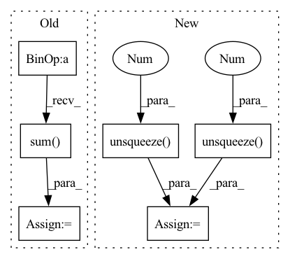

Pattern ID :11783

Before Change
loss = 0
for value, tau in zip(values, taus):
for target_value in target_values:
u = target_value - value
huber_loss = 0.5 * u.abs().clamp(min=0., max=self.k).pow(2)
huber_loss = huber_loss + self.k * (u.abs() - u.abs().clamp(min=0., max=self.k) - 0.5 * self.k)
quantile_loss = (tau - (u < 0).float()).abs() * huber_loss
loss += quantile_loss.sum() / self.batch_size
return loss
def train(self):
After Change
def computer_loss(self, tau, value, target_value):
// * get the quantile huber loss
u = target_value.unsqueeze(1) - value.unsqueeze(-1)
huber_loss = 0.5 * u.abs().clamp(min=0., max=self.k).pow(2)
huber_loss = huber_loss + self.k * (u.abs() - u.abs().clamp(min=0., max=self.k) - 0.5 * self.k)
quantile_loss = (tau.unsqueeze(0) - (u < 0).float()).abs() * huber_loss
loss = quantile_loss.mean()
return loss
def train(self):
In pattern: SUPERPATTERN
Frequency: 4
Non-data size: 6
Instances
Fragment ID: 39615996
Project Name: deligentfool/dqn_zoo
Commit Name: cc43e4e7e30dda5460401e24a2892af2d2699f30
Time: 2020-09-17
Author: 1027660817@qq.com
File Name: IQN/iqn.py
M Class Name: iqn
N Class Name: iqn
M Method Name: computer_loss(4)
N Method Name: computer_loss(4)
M Parent Class: object
N Parent Class: object
M File Name: IQN/iqn.py
N File Name: IQN/iqn.py
M Start Line: 118
M End Line: 127
N Start Line: 112
N End Line: 116
'>
Before Change
// shape (N, H * W) -> (N, 1, H, W)
attention = torch.softmax(attention, 1).reshape(-1, 1, features.shape[-2], features.shape[-1])
glimpse = (features * attention).sum(dim=(2, 3))
return glimpse
After Change
// shape (N, C, H, W) -> (N, attention_units, H, W)
feat_projection = self.feat_conv(features)
// shape (N, L, rnn_units) -> (N, L, attention_units)
state_projection = self.state_conv(hidden_state).unsqueeze(-1).unsqueeze(-1)
// (N, L, attention_units, H, W)
projection = torch.tanh(feat_projection.unsqueeze(1) + state_projection)
// (N, L, H, W, 1)
attention = self.attention_projector(projection.permute(0, 1, 3, 4, 2))
// shape (N, L, H, W, 1) -> (N, L, H * W)
attention = torch.flatten(attention, 2)
attention = torch.softmax(attention, -1)
// shape (N, L, H * W) -> (N, L, 1, H, W)
attention = attention.reshape(-1, hidden_state.shape[1], features.shape[-2], features.shape[-1])
'>
Fragment ID: 39615998
Project Name: mindee/doctr
Commit Name: 0310d6c3368ce0aee78f49bc54b62776afd89665
Time: 2022-02-24
Author: 76527547+fg-mindee@users.noreply.github.com
File Name: doctr/models/recognition/sar/pytorch.py
M Class Name: AttentionModule
N Class Name: AttentionModule
M Method Name: forward(3)
N Method Name: forward(3)
M Parent Class: nn.Module
N Parent Class: nn.Module
M File Name: doctr/models/recognition/sar/pytorch.py
N File Name: doctr/models/recognition/sar/pytorch.py
M Start Line: 44
M End Line: 57
N Start Line: 60
N End Line: 74
'>
Before Change
interest_vectors = self.interest_extractor(history, lengths) // bsz, K, emb
i_vectors = self.interest_extractor.i_embeddings(i_ids)
target_vector = i_vectors[:, 0] // bsz, emb
target_intent = (interest_vectors * target_vector[:, None, :]).sum(-1) // bsz, K
his_vector = self.intent_predictor(history, lengths) // bsz, K
pred_intent = self.proj(his_vector) // bsz, K
user_vector = (interest_vectors * pred_intent.softmax(-1)[:, :, None]).sum(-2) // bsz, emb
After Change
// For JS divergence analysis
if self.stage != 2 and feed_dict["phase"] == "test":
target_vector = i_vectors[:, 0] // bsz, emb
target_intent = self.similarity(interest_vectors, target_vector.unsqueeze(1)) // bsz, K
idx = torch.from_numpy(np.arange(batch_size)).to(self.device)
rec_vector = i_vectors[idx, prediction.max(-1)[1]]
rec_intent = self.similarity(interest_vectors, rec_vector.unsqueeze(1)) // bsz, K
out_dict["js"] = self.js_div(target_intent, rec_intent).sum(-1)
return out_dict
'>
Fragment ID: 39615967
Project Name: thuwangcy/rechorus
Commit Name: 65a5eeb4ab208d93c3b4817469809eb715f1b374
Time: 2021-12-07
Author: THUwangcy@gmail.com
File Name: src/models/developing/TiMiRecLight.py
M Class Name: TiMiRecLight
N Class Name: TiMiRecLight
M Method Name: forward(2)
N Method Name: forward(2)
M Parent Class: SequentialModel
N Parent Class: SequentialModel
M File Name: src/models/developing/TiMiRecLight.py
N File Name: src/models/developing/TiMiRecLight.py
M Start Line: 113
M End Line: 122
N Start Line: 128
N End Line: 155
'>
Before Change
wt = torch.softmax(torch.matmul(kt, self.Mk), dim=-1)
// Read Process
rt = (wt.unsqueeze(-1) * Mvt).sum(1)
ft = torch.tanh(self.f_layer(torch.cat([rt, kt], dim=-1)))
pt = torch.sigmoid(self.p_layer(ft)).squeeze()
// Write Process
After Change
x = q + self.num_q * r
batch_size = x.shape[0]
Mvt = self.Mv0.unsqueeze(0).repeat(batch_size, 1, 1)
Mv = [Mvt]
k = self.k_emb_layer(q)
v = self.v_emb_layer(x)
w = torch.softmax(torch.matmul(k, self.Mk.T), dim=-1)
// Write Process
e = torch.sigmoid(self.e_layer(v))
a = torch.tanh(self.a_layer(v))
for et, at, wt in zip(
e.permute(1, 0, 2), a.permute(1, 0, 2), w.permute(1, 0, 2)
):
Mvt = Mvt * (1 - (wt.unsqueeze(-1) * et.unsqueeze(1))) + \
(wt.unsqueeze(-1) * at.unsqueeze(1))
Mv.append(Mvt)
Mv = torch.stack(Mv, dim=1)
// Read Process
f = torch.tanh(
self.f_layer(
torch.cat(
[
(w.unsqueeze(-1) * Mv[:, :-1]).sum(-2),
k
],
dim=-1
'>
Fragment ID: 39615973
Project Name: hcnoh/knowledge-tracing-collection-pytorch
Commit Name: c42b01b83dbe54e94f4294009fbfe8bd910e3638
Time: 2021-10-06
Author: rhc0624@gmail.com
File Name: models/dkvmn.py
M Class Name: DKVMN
N Class Name: DKVMN
M Method Name: forward(3)
N Method Name: forward(3)
M Parent Class: Module
N Parent Class: Module
M File Name: models/dkvmn.py
N File Name: models/dkvmn.py
M Start Line: 40
M End Line: 66
N Start Line: 50
N End Line: 87